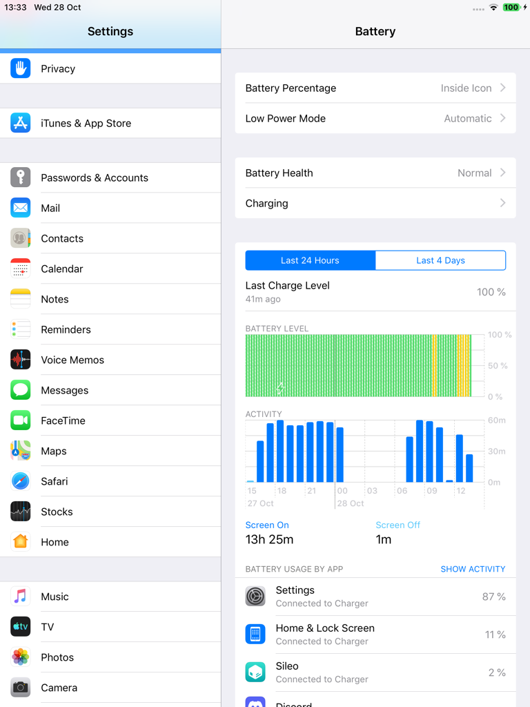
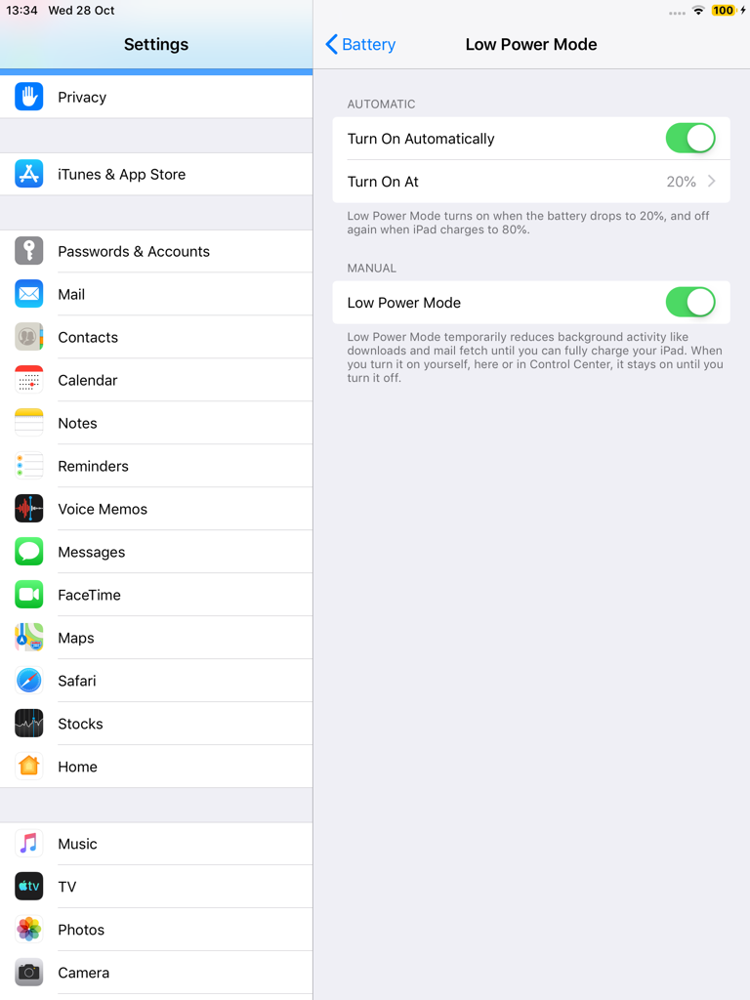
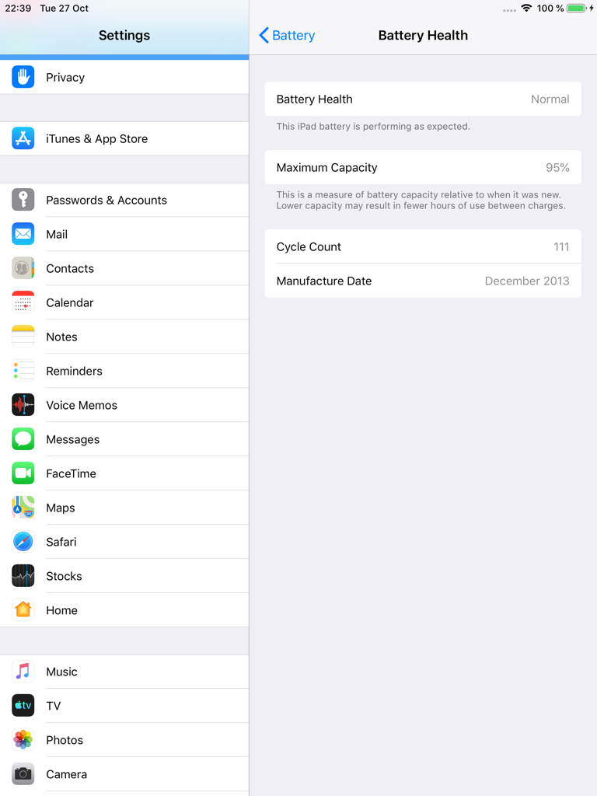
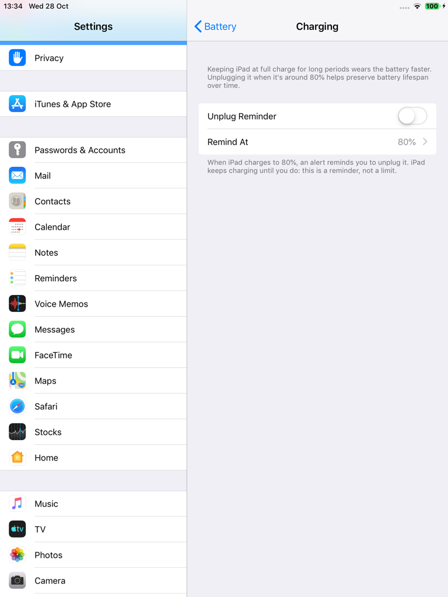
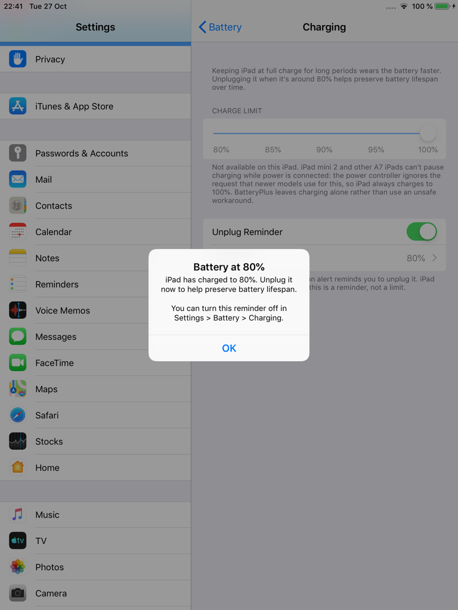
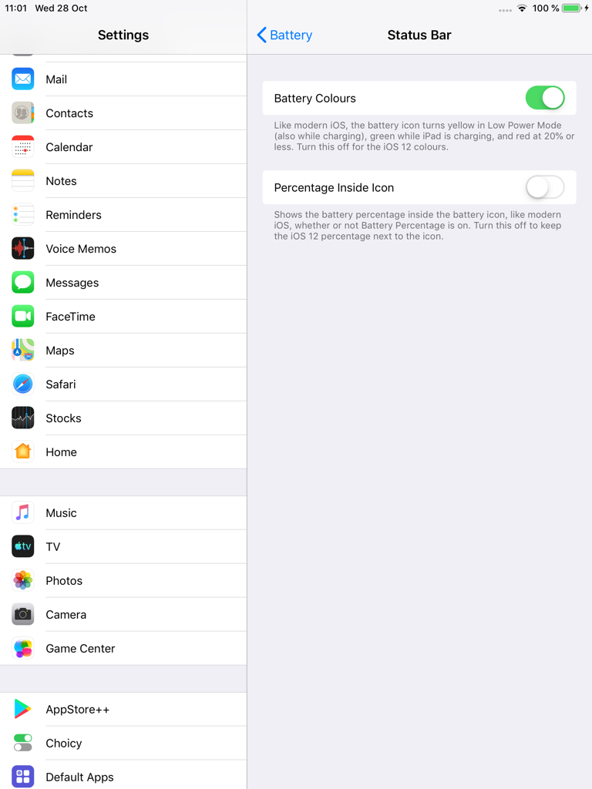
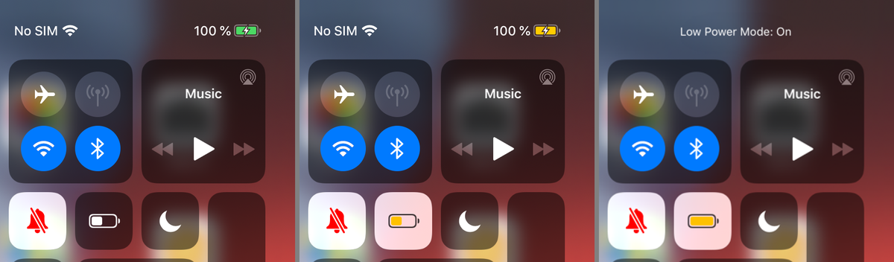
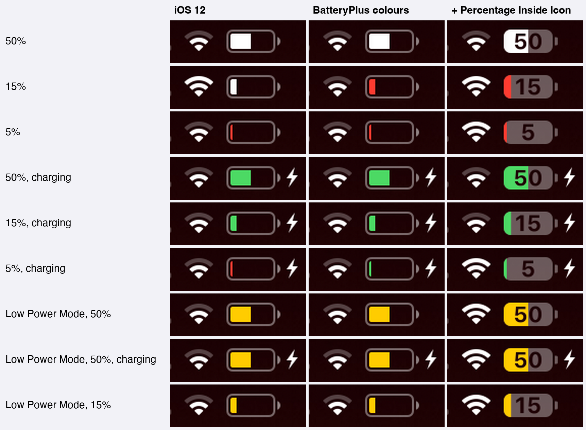
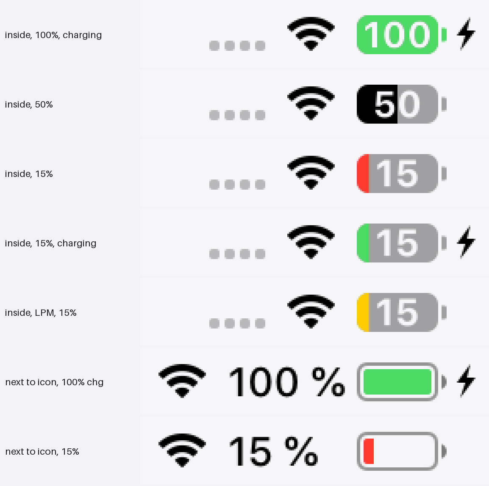
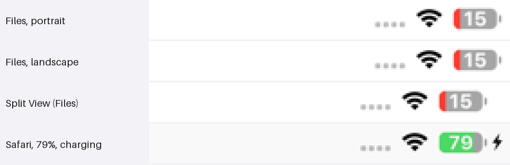

BatteryPlus (iOS 12)
On iOS 12, Apple keeps most battery features for iPhone. BatteryPlus brings them to iPad, in the iOS 12 style.
Low Power Mode appears in Settings > Battery and, with CCSupport, in Control Center. It is the real iOS mode: mail fetch, iCloud Photos, dynamic wallpapers and other background work pause, and iOS turns it off again at 80%. Battery Health shows Maximum Capacity, Cycle Count and Manufacture Date from the battery itself. Battery colours like modern iOS: the status bar battery turns yellow in Low Power Mode, green while charging and red at 20% or less. The percentage can go inside the battery icon, also like modern iOS, and Low Power Mode no longer forces the percentage on.
Charge Limit is shown as unavailable on A7 iPads such as the iPad mini 2: their charger ignores the request to pause charging, and BatteryPlus doesn't use unsafe workarounds. An optional Unplug Reminder tells you when the iPad has charged to the level you choose.
Screenshots










Features
- Low Power Mode switch in Settings > Battery, as on iPhone
- Low Power Mode module for Control Center (needs CCSupport)
- Battery Health: Maximum Capacity, Cycle Count and Manufacture Date
- Unplug Reminder at 80, 85, 90, 95 or 100%
- Battery colours like modern iOS: yellow in Low Power Mode, green while charging, red at 20% or less
- Percentage inside the battery icon, like modern iOS (optional, also in Control Center)
- No timers: nothing runs while idle
Settings
Settings > Battery:
- Low Power Mode: Apple's switch, at the top of the page.
- Battery Health: Maximum Capacity, Cycle Count and Manufacture Date.
- Charging: Charge Limit (shown as unavailable on A7 iPads, with the reason), Unplug Reminder (off) and Remind At (80% to 100%).
- Status Bar: Battery Colours (on) and Percentage Inside Icon (off; works with Battery Percentage on or off).
Control Center: Settings > Control Center > Customize Controls > Low Power Mode (needs CCSupport).
Compatibility
- Tested on iPad mini 2, iOS 12.5.8 (checkra1n + odysseyra1n / libhooker)
- Expected to work on other iOS 12 iPads; battery data depends on what each battery reports
- Control Center module: install CCSupport (recommended)
- No charge limit on A7 iPads, and Low Power Mode doesn't slow the CPU there
Changelog
Version 1.1.1
- Percentage Inside Icon now also works in Control Center. Its battery no longer switches back to the iOS 12 look while Control Center opens.
- Percentage Inside Icon works with Battery Percentage on or off.
- Low Power Mode no longer forces the battery percentage on; it follows the Battery Percentage switch.
- Descriptions say "modern iOS" instead of "current iOS".
Version 1.1.0
- First public release.
- Low Power Mode in Settings and Control Center, status bar battery colours and the percentage inside the icon, alongside Battery Health and the Unplug Reminder.
Information
| Version | 1.1.1 |
| Developer | itsAllexB |
| Size | 25 KB |
| License | GPL-3.0 |
| Source code | GitHub |
| Problems | Report an issue |
Unofficial. Not affiliated with or endorsed by Apple.